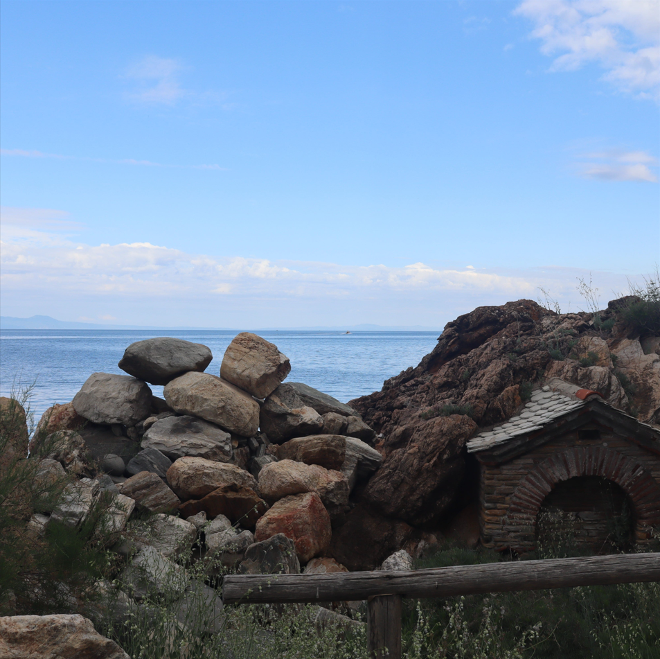

Am creat acest site pentru a explora diferite idei si subiecte pasionante. De asemenea, site-ul inglobeaza
unele proiecte realizate de mine si contine articole asupra unor teme care mi-au starnit interesul.
Lectura placuta a site-ului!

"Universul este un cerc al cărui centru e pretutindeni
și a cărui circumferință nu e nicăieri."
-Blaise Pascal
"De ce îi este omului de astăzi foame? De iubire şi de sens."
-Nicolae Steinhardt
"Un om nehotărât ajunge la fiecare pas pe pragul unei alternative,
adică în situația de a vedea că este într-adevăr o ființă liberă.
Un om hotarât este lipsit de acest neajuns."
-Lucian Blaga